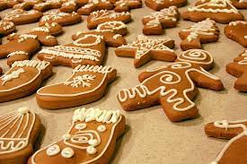

Gingerbread Cookies
Recipe by: Jaclyn

Ingredients
Cookies
- 3 cups all-purpose flour
- 1 Tbsp ground ginger
- 2 tsp ground cinnamon
- 1/4 tsp ground cloves
- 1/4 tspground nutmeg
- 3/4 tsp baking powder
- 1/2 tsp baking soda
- 1/2 tsp salt
- 3/4 cup packed dark brown sugar
- 10 Tbsp unsalted butter, softened
- 1 large egg yolk
- 1 1/2 tsp vanilla extract
- 1/2 cup molasses (not blackstrap)
Icing
- 3 cups powdered sugar
- 1 1/2 Tbsp meringue powder
- 4 - 6 Tbsp water
- 1/4 tsp vanilla extract
Instructions
- Preheat oven to 350 degrees.
- Whisk dry ingredients: In a mixing bowl whisk together flour, ginger, cinnamon, cloves, nutmeg, baking powder, baking soda and salt set aside.
- Cream butter and sugar: In the bowl of an electric stand mixer fitted with the paddle attachment cream together sugar and butter until well combined, occasionally stopping and scraping down bowl.
- Mix in wet ingredients: Mix egg yolk and vanilla. Mix in molasses and 1 Tbsp milk.
- Mix dry mixture with wet mixture: With mixer set on low speed slowly add in dry ingredients and mix until combined, while adding additional milk as needed just to bring dough together.
- Roll dough: Divide dough into two equal portions then roll each portion out evenly to 1/4-inch thickness (into more of a oblong or rectangular shape so it will fit on a cookie sheet) between two sheets of parchment paper.
- Chill briefly: chill on a cookie sheet in freezer 10 - 20 minutes, or until firm then cut into shapes using cookie cutters.
- Transfer to baking sheets and bake: Remove from paper using a thin metal spatula or pastry scraper if needed then transfer to parchment paper lined cookie sheet, spacing cookies about 1-inch apart, and bake in preheated oven 8 minutes or until slightly set*.
- Let cookies cool: Remove from oven and cool on baking sheet 2 minutes then transfer to a wire rack to cool completely. Repeat process with remaining dough.
- Make the icing: Add powdered sugar and meringue powder to the bowl of an electric stand mixer. Fit mixer with paddle attachment, add in 4 Tbsp water and the vanilla them mix on low speed until combined.
- Thin as needed and whip: Add more water to thin as needed and increase speed and whip mixture until it is glossy and thickens up. Tint with food coloring if desired. Transfer to piping bags fitted with tiny round tips.
- Decorate as desired: decorate cookies with icing and add sprinkles if desired. Let icing set at room temperature and store in an airtight container.
Why is this my favorite recipe?
This is my favorite recipe because they are some of the best gingerbread I have had. Also, I like to bake with my aunt and this is one her favorite things to make. I also enjoy decorating the cookies as it is fun to ice them. I also like the smell of gingerbread with all the spices. They remind me of winter time which is my favorite time of the year. Finally, I like to make them for my neighbors when they lend us their snow blower as a thank you.